Muchas gracias a MetalFrieza3000 por traducir esta guia al español!
Viejos AFLs
-
PZS3US1.AFLPZS3US2.AFL
-
(listas de archivos de la ver. NTSC-U de BT3)
-
No hay otros AFLs aparte de estos.
Eso es porque fueron hechos cuando
modders se aferraban a la ver. NTSC-U,
sin importarles que archivos eran cuales,
por eso los nombres de los archivos estan con nombres nada intuitivos (.unk).
ATENCION: Mis mods antes del modpack "Sparking of the Dawn", todos usan usan nombres de los viejos AFLs por pura conveniencia. Mea culpa.
Fuera de eso, todo lo demas que hize ahora incluye su propio set de instrucciones (ya que cada mod es diferente), similar a lo que provee esta guia.
Paso 1: Abre AFS Explorer, y ve a File -> Import AFS file from CD image...
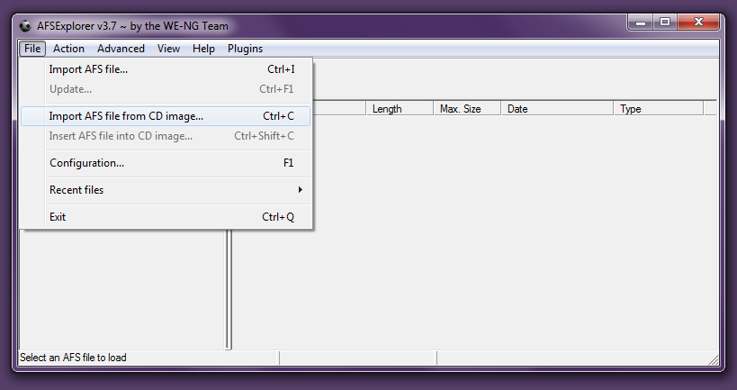
Paso 2: Elije una ISO de Budokai Tenkaichi 3, preferiblemente una sin modificar.
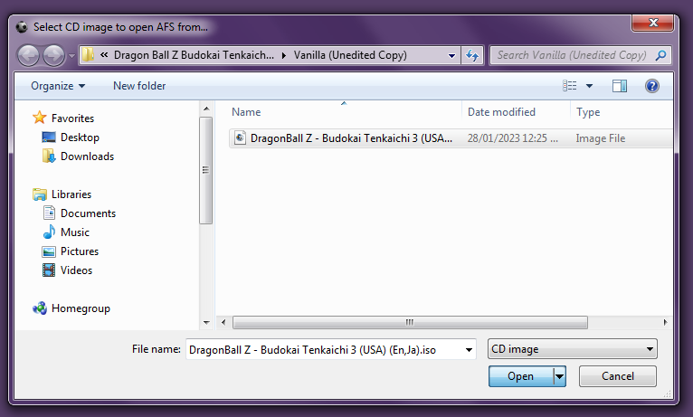
Paso 3: Tras clickear Open, deberia poder ver el contenido de la ISO.
Haz doble-click en la carpeta DATA , y selecciona PZS3XX1.AFS y haz click en OK.
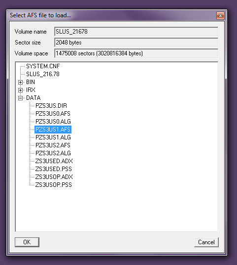
XX representa la region de la ISO. Remplazalo con uno de estos acronimos:
- US (Para la Version NTSC-U / Americana)
- JP (Para la Version NTSC-J / Japanesa)
- EU (Para la Version PAL / Europea)
Paso 4: Una vez que el archivo AFS esta cargado, ve a Advanced -> Import file name list...
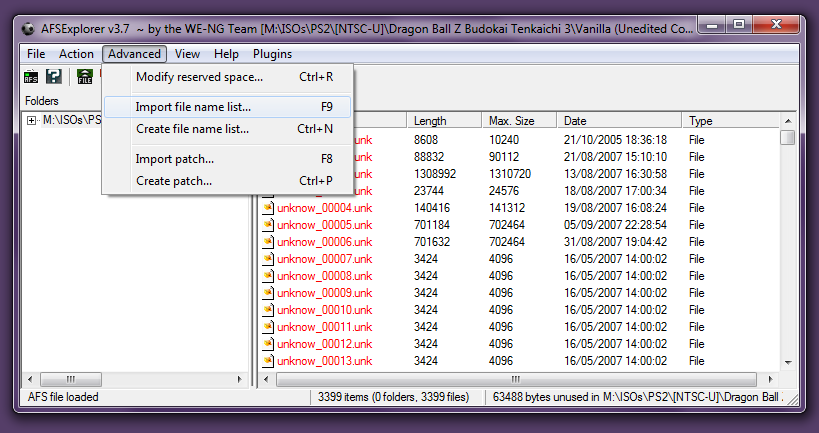
Paso 5: Antes de hacer nada, asegurate de mirar las extensiones de los archivos de los mods que quieres instalar.
Si tienes UNK, usa los AFLs Viejos. De lo contrario, usa los nuevos.
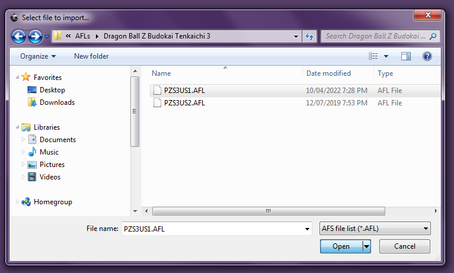
Paso 6: Para asegurar que los nuevos nombres de los archivos se queden incluso tras cerrar el AFS Explorer, ve a File -> Update y click en Save.
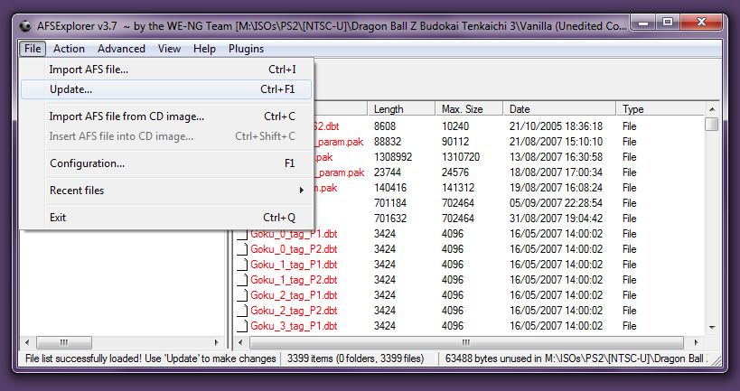
Paso 7: Cuando se termine de actualizar el AFS, ve a Action -> Import Folder... y elige la carpeta con el mismo nombre que PZS3XX1.AFS, o al menos,
una carpeta que contenga archivos UNK/PAK aceptables (significando que los nombres de los archivos deben ser EXACTOS a los que estan en el AFS).
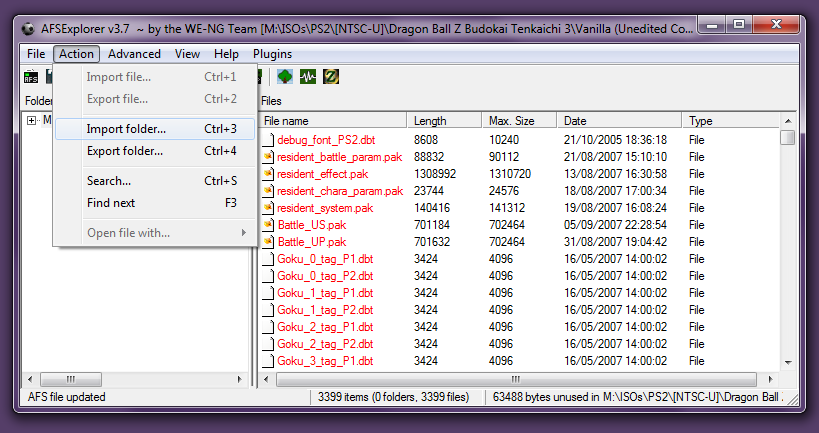
Nota: AFS Explorer no detecta archivos en subcarpetas, asi que debes ponerlo todo en una sola carpeta.
Paso 8: A no ser de que haya no cambios en el tamaño de los archivos, AFS Explorer te preguntara lo siguiente:
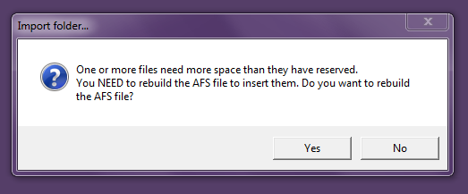
La respuesta a eso es siempre que "si", asi que clickea Yes y guarda el AFS destinatario oomo PZS3XX1.AFS.
Paso 9: Dale tiempo al AFS Explorer, hasta que aparezca el siguiente mensaje:
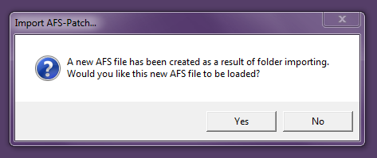
A este punto, habra 2 opciones sobre como el nuevo AFS sera insertado a la ISO:
- Si clickeas Yes, entonces espera a que el nuevo AFS cargue, y ve a File -> Insert AFS file into CD image...
- De esta manera, no tendras que descargarte UltraISO o ImgBurn, ya que AFS Explorer reconstruira la ISO poco a poco por ti.
- Si clickeas No, cierra el Programa Inmediatamente, y usa UltraISO o ImgBurn para reconstruir la ISO.
- Esto es recomendable si el mod en cuestion solo cambia un AFS en vez de ambos.
- De lo contrario, tendras que reabrir AFS Explorer y repetir pasos del 1 al 9 para PZS3XX2.AFS también.
Paso 10: Abre UltraISO, y ve a Options -> Language y cambialo a tu Idioma para prevenir confusion.
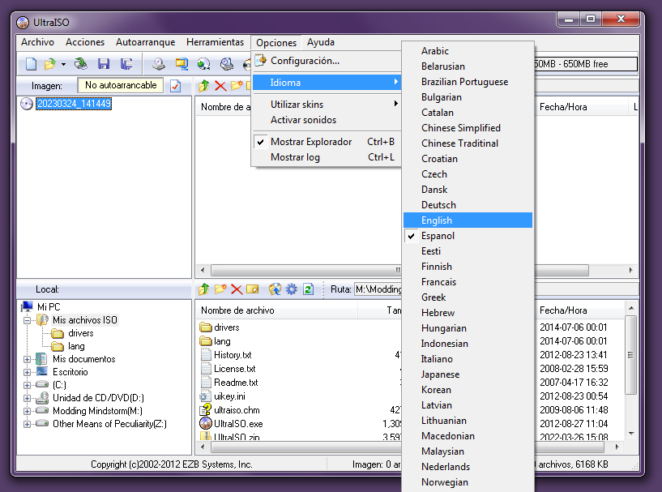
Paso 11: De ahi, abre la ISO dandole a Archivo -> Abrir..., y haz doble-click en la carpeta data.
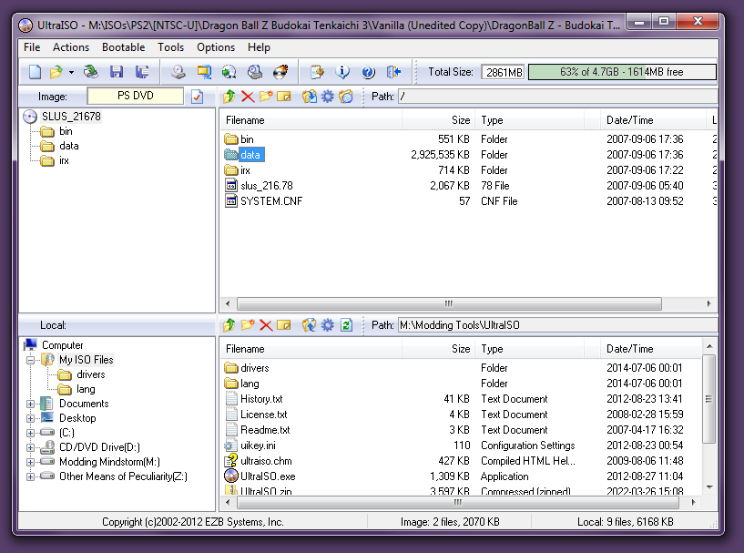
Paso 12: Arrastra el(los) nuevo(s) AFS(s), y guarda los cambios con el comando CTRL+S.
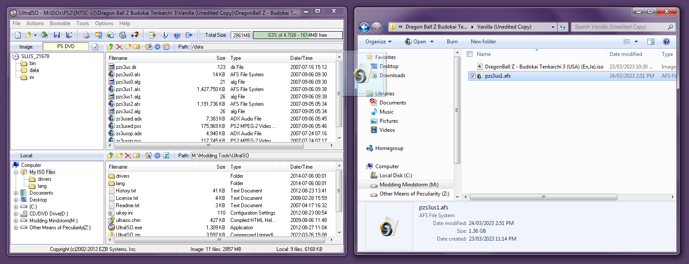
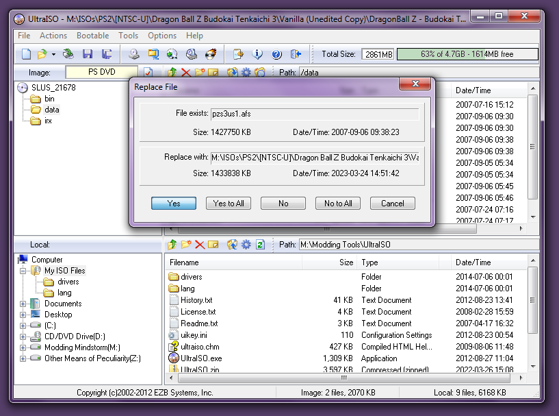
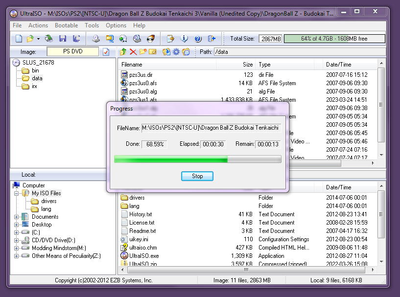
Si los pasos se han seguido correctamente, ¡Ya deberias tener el mod instalado y listo para usarse! ¡Enhorabuena!